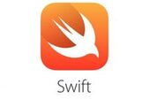

Sobre mi
En desarrollo
Información personal

Nombre: Lucas
Apellidos: Martínez Rego
UO: 277440
Correo electrónico: uo277440@uniovi.es
Dirección: Camín de la Piñera 26
Listas
Aficciones
Esta lista no está ordenada
- Música
- Jugar videojuegos
- Ir al cine
- Jugar al padel
- Escalada
Canyantes/Grupos favoritos
Está lista estará ordenada
- Quevedo
- Mora
- Bzrp
- Feid
- Karol G
Asignaturas favoritas
5 asignaturas que más me han gustado hasta el momento
- Cálculo
- Asignatura de formación básica que trata temas muy interesantes
- Diseño de Lenguajes de Programación
- Profundiza en el diseño de lenguajes, muy interesante
- Diseño del Software
- Asignatura muy útil con patrones interesantes
- Repositorios de Información
- Manejo de bases de datos e implicación en proyectos
- Álgebra
- Fundamentos del álgebra interesantes
Aficciones desarrolladas
Aficciones específicas mediante listas anidadas
- Deportes
- Videojuegos
- Lenguajes de Programación
- C

- Java

- Swift 
Unos videos para demostrar mi aficción a los videojuegos
Temperaturas medias últimos 10 años en Gijón
| Años/Temperatura media |
2014 |
2015 |
2016 |
2017 |
2018 |
2019 |
2020 |
2021 |
2022 |
2023 |
| Temperaturas |
16.0°C |
15.4°C |
15.7°C |
16.2°C |
16.0°C |
14.9°C |
14.8°C |
15.2°C |
15.2°C |
15.4°C |